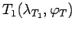
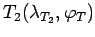
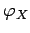
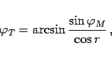
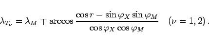

Inhalt Index DeskTop Bronstein

 Geometrie Sphärische Trigonometrie Berechnung sphärischer Dreiecke Kleinkreis
Geometrie Sphärische Trigonometrie Berechnung sphärischer Dreiecke Kleinkreis


Der Kleinkreis wird von zwei Meridianen, den Tangiermeridianen, in den Tangierpunkten  und  berührt.
Aus der Forderung, daß für sie das Argument des Arkuskosinus in (3.243) hinsichtlich der Variablen  extremal sein muß, erhält man:
|  | (3.244a) |
|  | (3.244b) |
Hinweis: Unter Umständen ist gemäß (3.231) eine Rückversetzung der Winkel erforderlich.